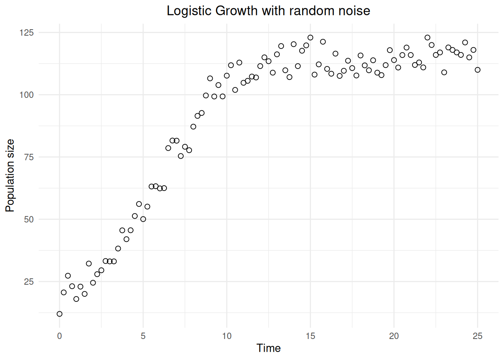
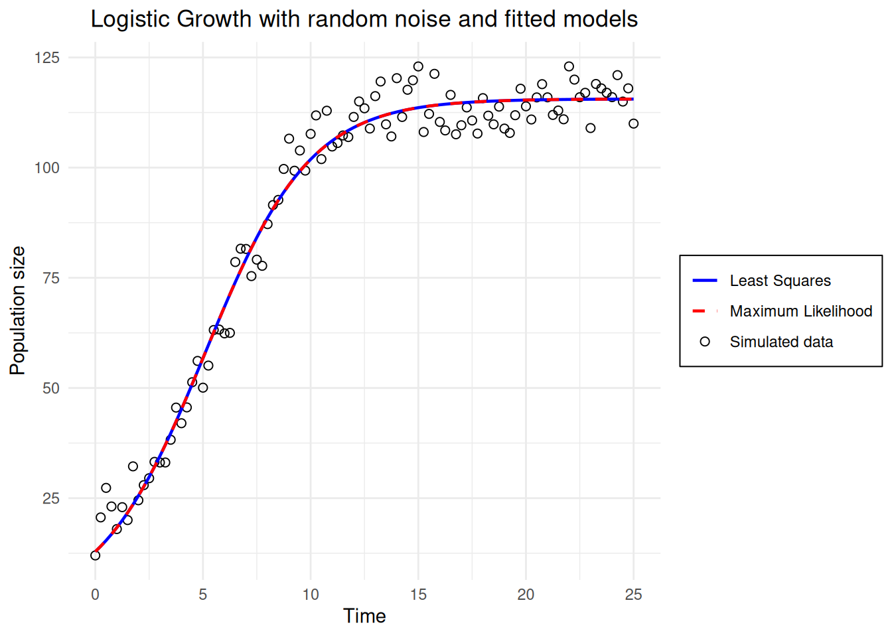

# Parameters
r <- 0.5
K <- 100
error <- 15
y0 <- 5
# Define a logistic growth function with noise
logistic_noised <- function(t, r, K, y0, error) {
growth <- K / (1 + ((K - y0) / y0) * exp(-r * t))
return(growth + rpois(1, lambda = error)) # Add random error
}
# Create the time vector
time <- seq(0, 25, 0.25)
# Apply the logistic function over the time vector
sim_data <- sapply(time, logistic_noised, r = r, K = K, y0 = y0, error = error)EDO Estimation of parameters : the logistic growth
Introduction
This document aims to be a roadmap to estimate the parameters of a logistic growth from a population: from the data simulation to the estimation of the parameters. The following document will thus be organized in two parts : the data simulation and the estimation of the parameters.
Data Simulation
We first simulate the data on which we will illustrate two estimation methods. The simulation is based on the logistic growth (Verhulst model). The ordinary differential equation describing the logistic growth is defined as \[ \frac{dN}{dt} = rN(1-\frac{N}{K}) \] where N is the size of a population, r is the growth rate and K is the carrying capacity. In logistic growth, the growth rate of a population declines as the size of the population approaches the carrying capacity. This carrying capacity represents the maximum number of individuals in the population that can be sustained by the available environmental resources.
A biological example of this is Paramecium aurelia, a paramecia species that exhibits logistic growth when maintained in isolated populations @gause1934influence.
Thankfully, there is an explicit solution of the Verhulst model that allows us to simulate the data easily. For each x (the time), we calculate the deterministic solution and add a noise, a centered, normally distributed deviation from the deterministic model.

Estimation of the parameters
We have p parameters \(\theta = (\theta_1,\theta_2,...,\theta_p)\). Several methods can be used to optimize model parameters, such as least squares and maximum likelihood. In this section, we will examine the application of each method to estimate the parameters of the previously simulated logistic growth.
General theory
Least squares
Definition
One of the most used methods to assess the quality of a model is the least squares method, also known as mean square error method (MSE). It quantifies how the simulated data match with the real ones by measuring the gap between the simulated and the real points (@cornillon2007regression). This gap is estimated with the following formula:
\[ \text{MSE} = \sum_{i}^{}(Y_{i}-\hat{Y})^{2}\\\hat{Y} = \text{mean value of the data set}\\Y_{i} = \text{value of the individual i} \]
A good model minimizes the MSE. Graphically, this means that the vertical distance between each simulated point and its corresponding observed value is as small as possible.
Specific aspects
The MSE is one of the most common method to assess the quality of a model. However, it has some limitations that may call its use into question. First, as it compares the simulated data and the observed ones point by point, the presence of outliers can strongly deviate the MSE estimation. Moreover, this estimation method assumes a linear relation between the variables. Therefore, if the relation between the variables is not linear, the MSE may not reflect the true performance of the model.
Maximum likelihood
Definition
Likelihood corresponds to the probability of observing the data, knowing the parameters \(\theta\) (@fisher1922mathematical). The likelihood function is as follows : \[ L(\theta) = \prod_{i=1}^n f(x_i , \theta) \] In this function, \(x_i\) corresponds to the observations and \(f(x_i,\theta)\) corresponds to the probability density function of the random variable \(X\).
The maximum likelihood method consists in determining the estimated parameters \(\hat\theta\) that maximize the likelihood function: \[ \hat\theta = \arg\max_\theta L(\theta) \] Maximizing \(L(\theta)\) means finding the parameter values that make the data most plausible under the chosen model.
Specific aspects
If the errors of the data are independent and identically distributed, this method is equivalent to the least squares method :
\[ \hat{\theta} = \arg\max_{\theta} L(\theta) = \arg\min_{\theta} SCE(\theta) \] We prefer to work with the logarithm of the likelihood function \(L(\theta)\), as it converts products into sums: \[ LL(\theta) = ln(L(\theta)) = \sum_{i=1}^n lnf(x_i,\theta) \]
Implementation of the two methods
We first need to redefine a function of the model we want to fit (without noise this time).
logistic <- function(t, r, K, y0) {
K / (1 + ((K - y0) / y0) * exp(-r * t))
}Least squares
We need a function that compute the sum of the squared errors between the data and the model prediction y given a x.
# NB : theta is a vector of parameters
SSE <- function(theta) {
r <- theta[1]
K <- theta[2]
y0 <- theta[3]
mod_pred <- sapply(time, logistic, r = r, K = K, y0 = y0)
return(sum((sim_data - mod_pred)**2))
}We now have to find a way to modify the parameters iteratively to find the best ones : the set of parameters \(\theta\) that minimize the sum of squared errors. Thankfully, there are several functions implemented in R to do so. We’ll use optim(), based on a gradient descent algorithm. We need to specify initial guess on the parameters to initialize the gradient descent algorithm. We’ll take biologically meaningful parameters as initial guess.
ig_r <- 1
ig_K <- 75
ig_y0 <- 2
fitted_params_SSE <- optim(c(ig_r, ig_K, ig_y0), SSE)$par
print(fitted_params_SSE)[1] 0.4038295 116.0801331 13.1639033For practicality, or for some EDO models that are not explicitly solvable (i. e. we can’t find a unique solution to the Cauchy problem), we can locally and numerically solve in the same time we calculate the likelihood. This alternative is used in the next part. We use the function ode() from the package deSolve to do so.
library(deSolve)logistic_ODE =function(t,N,parametre){
r=parametre[1]
K=parametre[2]
dNdt = r*(1-N/K)*N
list(c(dNdt))
}Maximum likelihood
MMV <- function(theta){
r1 <- theta[1]
K1 <- theta[2]
N0 <- theta[3]
sol = ode(y = N0, times = time, func = logistic_ODE, parms = c(r1, K1))
mod_pred <- sol[, 2]
loglik = dnorm(sim_data, mean = mod_pred, sd = error, log = TRUE)
return(sum(loglik))
}ig_r <- 0.1
ig_K <- 100
ig_y0 <- 1
fitted_params_MMV <- optim(c(ig_r, ig_K, ig_y0), MMV, control=list(fnscale=-1))$par
print(fitted_params_MMV)Data visualization : simulated dynamics with estimated trends
As we could expect on this kind of data, the estimated parameters are almost the same with the two methods, The two estimated trends we show on the following graph are even indistinguishable.

Conclusion
Estimating model parameters is one of the main tasks of a modelor in ecology. We have explained and illustrated two methods to estimate the parameters of a logistic growth, which is a common approach in population dynamics. There are other methods including Bayesian statistics we didn’t developed in this document.